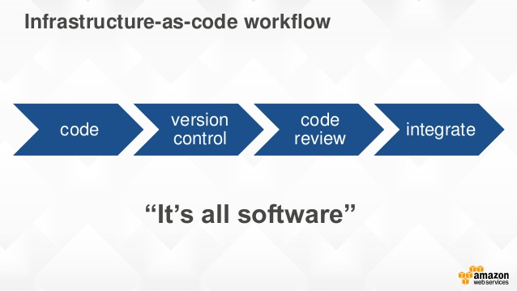

Alexandre DuBreuil
Gilles Di Guglielmo

We define a secret as information that can be used to access sensitive data. Pretty much any information that we cannot put on a public repository. That includes:
public class ClientPasswordCallback implements CallbackHandler {
private static final String USERNAME = "lesfurets";
private static final String PASSWORD = "hunter2";
@Override
public void handle(Callback[] callbacks) {
final WSPasswordCallback pc = (WSPasswordCallback) callbacks[0];
if (USERNAME.equals(pc.getIdentifier())) {
pc.setPassword(PASSWORD);
}
}
}
<?xml version='1.0' encoding='utf-8'?>
<Server port="1234" shutdown="SHUTDOWN">
<!-- ... -->
<GlobalNamingResources>
<Resource name="jdbc/b2b2cDatabase"
username="dev"
password="hunter2"
url="localhost:2345"
type="javax.sql.DataSource"
driverClassName="org.mariadb.jdbc.Driver"
jdbcInterceptors="..."/>
</GlobalNamingResources>
<!-- ... -->
</Server>
Remove secrets from code and production machines
Our objective is to have a life-cycle that works like this:
insurer_password)testpass)From code to production, different person with different access rights are handling secrets.
If you do infratructure as code, you probably have secrets in your source code. We want to keep infra as code, but remove the secrets.
Our machine provisioning and deployment is done with Ansible. It makes staging possible by facilitating the creation of new environment and enables disposable infrastructure.
At LesFurets we deliver code to production at least daily. Continuous delivery means that it is easy to push a feature to production, and also easy to push an old version in case of emergency.
Many tools are available for secrets management, yet not all will fit your purpose. Making your own custom solution might not be a good idea given how hard it is.
You can fetch the secrets at:
Buildtime which means the production machine will have a cleartext copy of the secret
Runtime which means the production machine will dynamicaly get the secret, use it, then discard it, resulting in increased security
Lightweight, performant, open-source and battle hardened.

Deploying multiple copies of Vault instead
of using it as a central database.


We are looking for very specific advantages:
TPM is a password manager (like Vault) containing our secrets, but it is never used directly by the production servers.

A process by which potential threats can be identified, enumerated, and prioritized.
To design a system with security in mind.
There are many ways to do a threat model,
today we'll use the popular STRIDE method.
There is only one decryption key that can unseal the Vault. It should never be written to disk. If the Vault is sealed (manually or not), it cannot be unsealed again.
If that happens, the application needs to be redeployed.
There is only one, single use, wrapped token than can provide the session token. Once the wrapped token is used, there is no other way of connecting to the Vault.
If the connexion to the Vault is lost for too long, the lease for the session token expires and the app cannot authenticate anymore.
If that happens, the application needs to be redeployed.

public class ClientPasswordCallback implements CallbackHandler {
private static final VaultService VAULT = CoreServiceFactory.getInstance().getVaultClient();
@Override
public void handle(Callback[] callbacks) {
final WSPasswordCallback pc = (WSPasswordCallback) callbacks[0];
if (VAULT.getSecret("insurer_username").equals(pc.getIdentifier())) {
pc.setPassword(VAULT.getSecret("insurer_password"));
}
}
}
Read OWASP Secure Coding Practices and make sure it is known in the development team. A secure system needs a secure codebase.
Java isn't a secure language but for our use case using short lived secrets (stack memory, not heap memory) is a good start.
Using a security static code analysis tool like Checkmarx is also recommended.
Using Vault decentralized makes it easier to manage and performance is not an issue if each JVM has it own Vault
We rely heavily on Vault, since each PII encryption needs an encryption keys in Vault.
It's also easier to scale by adding new Vaults and more resilient to network failures.
Remember our goals, mainly: disposable infrastructure, continuous delivery, version migration, reduced operation, performance (speed and network).
Complex solution: compared to a single Vault, this is more complicated to implement, but easier to automate and maintain.
Requires strong automation: we had to port old Bash deployment to Ansible, but it is a healthy approach that benefits the whole system.
Impossible application restart: this is disposable infrastructure, it is not a problem if redeployment is fast.
Continuous delivery and disposable infrastructure: easier to replace than migrate.
DevOps: no additional infrastructure, less work for the operations team, and more freedom for the devs.
We have no network failures, no migration, excellent performance and easy staging for new environment.